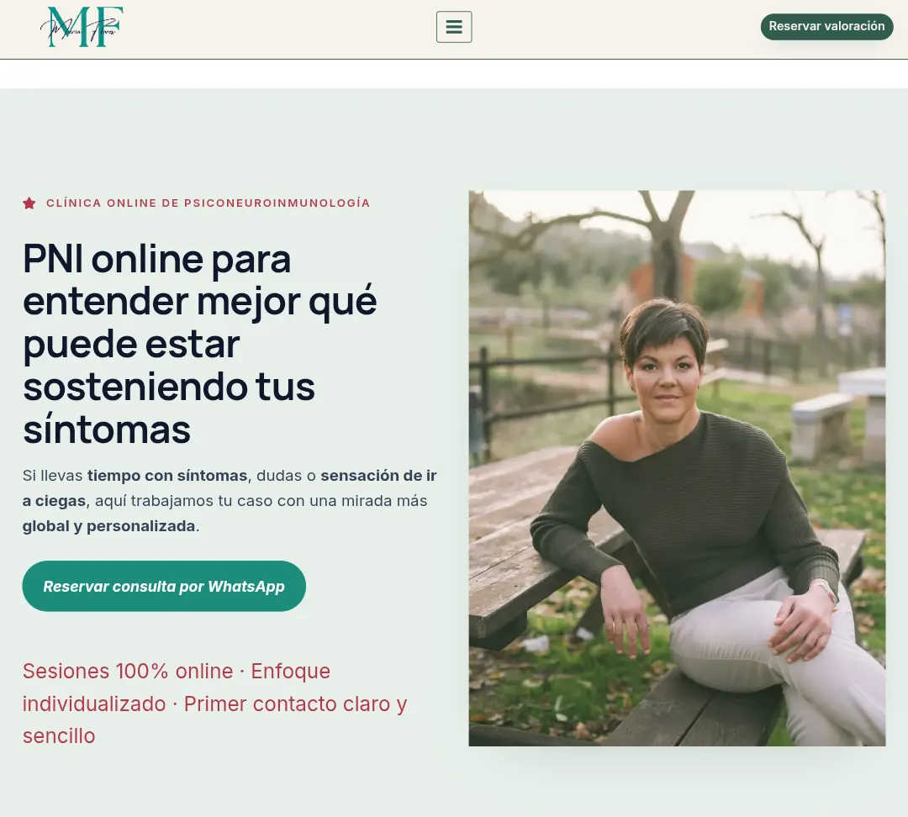

01 / WEB PROFESIONAL
Publicada y operativaMaría Flores PNI.
Una web que he creado por mi cuenta y que ya está en funcionamiento.
Visitar la webmariaflorespni.com
- El contexto
- Una presencia digital propia para la actividad profesional de María Flores PNI.
- Mi aportación
- He realizado la web por mi cuenta. Es un proyecto que muestra mi experiencia práctica llevando una web hasta su publicación.
- Su estado actual
- La web está publicada, operativa y en uso. Puedes conocer el trabajo directamente en su dominio.
QUÉ APORTA A MI EXPERIENCIA
Sacar adelante una web profesional y verla funcionar como parte de una actividad real.
